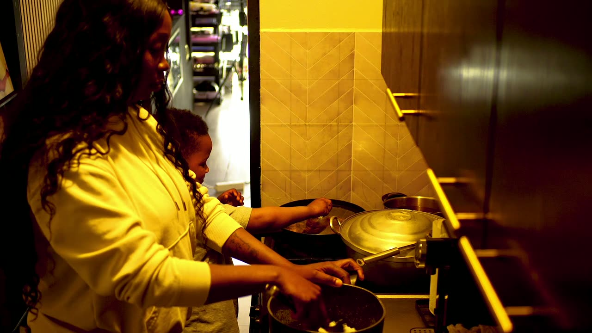
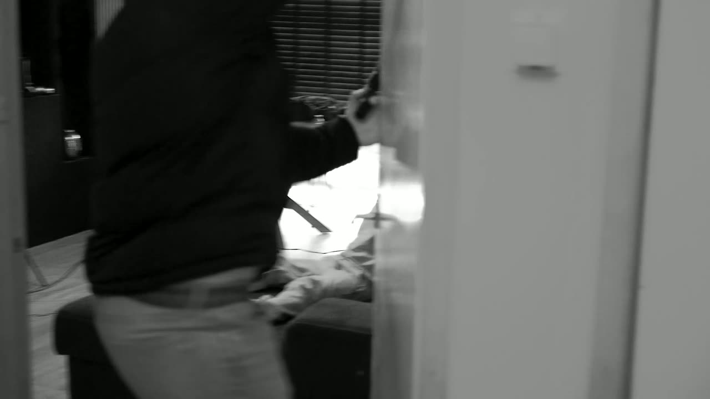
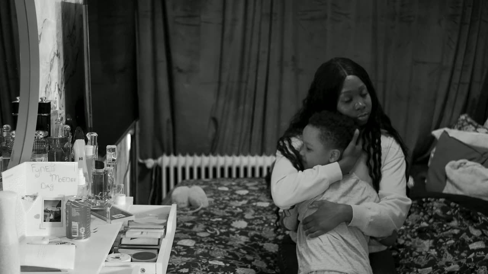

Client assignment
Produced for Young Vlogga’s OV09 album as a team project.
04 / Client assignment · Film
A client trailer for Young Vlogga’s OV09 album, moving from a childhood story into a studio performance.
The finished project
My role / client context
Produced for Young Vlogga’s OV09 album as a team project.
Coordinated stakeholder communication and film-day logistics, acted in the story, and edited pacing and atmosphere in After Effects.
Post-production
Shortened clips, closer cuts to the music, added emotional close-ups and built tension around the robbery scene.
Project feedback informed pacing, close-ups and stronger contrast in the robbery sequence.
Frames from the film



The video's on-screen editor credit names Dean Azghari and Gillvano Linakala; my documented editing contribution is separate.
The closing credits also thank Family Geldorp and Fontys ICT.